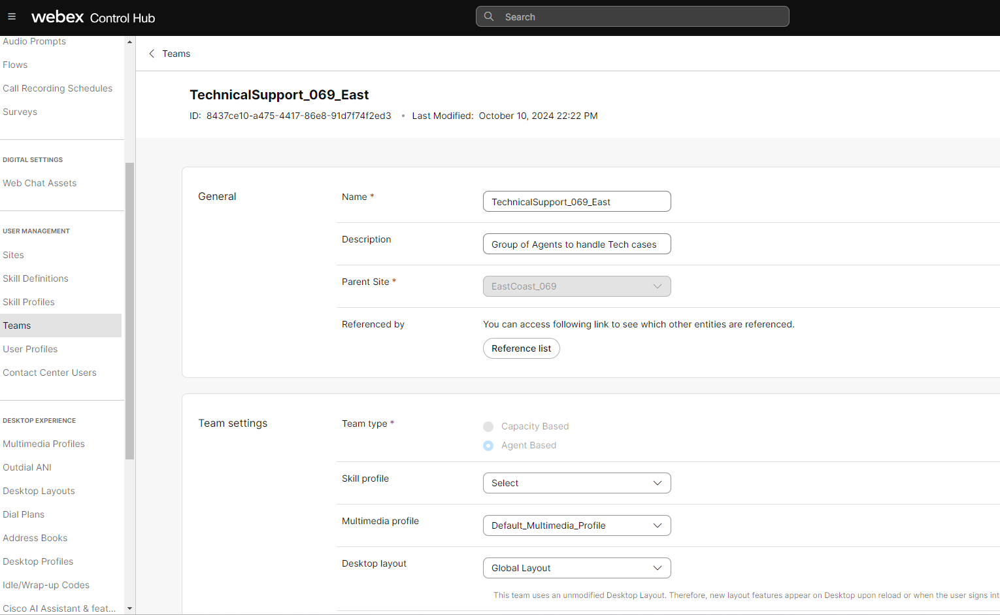

Lab 1 - Enhancing the caller experience
Please submit the form below with your Attendee or pod ID. All configuration entries in the lab guide will be renamed to include your pod ID.
Note
The input in the images that follow are only examples. They do not reflect the input you need to use in the lab exercises. In some cases, the input in the images may not follow the same attendee or pod ID from previous images. They are for representation only
Enhancing the caller experience: The foundation of call routing techniques
Imagine you are calling your telecom provider about a technical issue. You hope to get connected with the right agent quickly. But depending on the nature of your inquiry, the system can either route you directly to a specialized technical team or to an order status team if your issue is related to a product delivery.
Teams based routing / Longest available routing
In this setup, specific teams are aligned to handle certain types of calls – like a technical team for troubleshooting or an order status team for inquiries about shipments. Teams-Based Routing allows us to organize agents into these groups called Teams and ensure the caller receives the right expertise.
Multimedia profile
What is it?
A Multimedia Profile defines the various channels through which an agent can communicate with customers. Think of it as a toolbox filled with different tools (or channels) that agents can use to assist customers. Each tool is designed for specific tasks, making the agent more versatile and effective.
How does it work?
- Channel Assignment: Each agent can be assigned to specific channels based on their roles and preferences. For instance, one agent might handle phone calls and chats, while another might focus on emails and social media interactions.
- Team-Based Approach: Teams can have a collective Multimedia Profile, allowing for a broader range of customer interactions. For example, a technical support team might manage both chat and phone calls, ensuring coverage across all channels.
Configuration
Login into Control Hub https://admin.webex.com
{kind=link}
Look for the contact center option in the left pane under SERVICES – Contact Center
{kind=link}
Navigate to DESKTOP EXPERIENCE - Multimedia Profiles and click Create Multimedia Profile on the top right corner of the page
{kind=link}
Create a new MMP profile with a name MMP_
{kind=link}
Set the Blended in the More Details section and set the Voice to 1, Chat, Email and Social all to 3
Click Create
You have now configured a multimedia profile for the agent to handle 1 voice and 3 each of other digital channels simultaneously.
Site
What is it?
Consider a company operating in various regions, each with a unique geographical location where agents are based. These locations can range from bustling urban centers to quieter suburban areas, affecting how services are delivered and how agents interact with customers. The resources, technologies, and local knowledge available at each location play a crucial role in enhancing customer service.
Configuration
Under USER MANAGEMENT on the left pane navigate to Sites
Click Create Site on the top right corner to create a new site East_
Click Create
{kind=link}
Repeat the above steps to create a West_
{kind=link}
Teams and agents
What is a team?
Agents who specialize in similar tasks are grouped together into Teams. For example, all the agents who handle technical issues form a Technical Team, and those who deal with order inquires make up the Order Status Team. This way, when a caller needs help, the system directs the call to the right team of experts.
By organizing agents into teams, we ensure that callers are handled efficiently by agents with the right knowledge. So, if you need help fixing your phone, you’ll be connected to a technical expert instead of someone who only knows about orders.
As part of this setup, when agents log in to the system, they choose the team to login which is assigned to the agent. For instance, if the agent is part of the East Technical Team, they login under that team’s profile. This way, the system knows which team they belong to and routes calls to them accordingly.
Configuration
Under USER MANAGEMENT in the left pane navigate to Teams and click Create Team.
Create the TechnicalSupport_ 
{kind=link}
{kind=link}
On the next screen, click Done
Now create another TechnicalSupport_
{kind=link}
{kind=link}
Setup Auxiliary codes
Idle or wrap up codes are two types of Auxiliary codes. - Idle codes typically indicate why an agent is not available to handle customer contacts such as during a lunch break or meeting. - Wrap-up codes indicate the result of the customer interaction, for example, the agent escalated the contact, or sold a service.
Navingate to DESKTOP EXPERIENCE - Idle/Wrap-up Codes and click on Create Idle/Wrap-up Code
Create one or TechncialSupport

Click Create
Create another one for BillingInquiry
{kind=link}
Once these wrap-up codes are created we need to make them available to agents. This is done through Desktop Profiles that the agents get assigned
Under DESKTOP EXPERIENCE - Desktop Profiles select the Agent-Profile (Auto WrapUp) and click on the Idle/Wrap-up Codes

Ensure that the Wrap-up Codes is selected as Specific and select the new wrap-up codes that we created in the previous step. You may need to make one of the wrap-up codes as default
The system will also choose All Idle codes available for the agent to indicate their unavailability for handling customer contacts
Setup Agents
Under USER MANAGEMENT in the left pane navigate to Contact Center Users. Search for attendeeID in the search box of the Contact Center Users page. attendeeID is your pod ID. Click on the agent created for your pod and configure them for Contact Center.
Search for
{kind=link}
{kind=link}
Now click Save
Configure the same for the second Agent:
{kind=link}
{kind=link}
Verify access to the agent desktop
Please use Google Chrome as the web browser when using webRTC as the voice endpoint
Note
Since we will be using the same Chrome browser for different roles we will use the Chrome Browser user profiles to allow multiple logins into the different components of the Webex contact center. For the control hub, use the Administrator profile created for you in the Chrome browser. Always offer Chrome to remember your credentials and password for this lab
Use a different Chrome browser profile for each agent
{kind=link}
Navigate to https://desktop.wxcc-us1.cisco.com and login using the agent configured to the Technical_support team
Remember to login using the below configurations
{kind=link}
Once logged in click on the Agent initials on the top right to verify your successful login
{kind=link}
Test the login for the other agents using their respective web browser profiles of Google Chrome
In this section you have understood how to access the Control Hub, configure the agents needed for the rest of this lab exercise and log them in with some help from the Chrome browser profiles.
Queues
A Queue is like a virtual ordered line that callers are placed in while waiting for an agent to become available. Think of it like standing in line to enter a movie hall. The system organizes all incoming calls into different queues based on the type of request. For example, callers from east coast requiring technical support go into the TechnicalSupport_East, while those from West Coast are placed in the TechnicalSupport_West Queue.
Once we’ve defined queues for different call types, we need to assign teams to handle those queues. This is done using Call Distribution Group (CDG). The Call Distribution Group allows us to assign one or more teams to a single queue. For example, both the technical teams could be associated to their respective queues.
Why CDGs matter
This setup ensures that when a caller enters the East Coast Technical Queue, they are directed to agents in the East Coast. If you want to get more flexible, you can assign multiple teams to one queue. For instance, if the East Coast queue is often overloaded, another team can be added during configuration to expand the pool of agents.
But what if the East Coast queue is free, whereas West Coast Queue is filling up. This is where Rank Queues comes into play. We can assign a priority to the queues from the perspective of the team. We can let teams choose the order in which they will service the queues they are responsible for. For example, the East Coast Technical Team will always prioritize their own queue first, but if they have no calls waiting, they can assist with the West Coast Queue.
Why Rank Queues Matter
This setup makes sure the team focusses on their specialized tasks first. But in the case of idle time, they can help with other queues, like the West Coast Queue, ensuring maximum efficiency across the teams.
Create Queues
Login into Control Hub https://admin.webex.com with your administrator credentials to begin our configuration. Navigate to Contact Center - CUSTOMER EXPERIENCE - Queues and click Create Queue.
{kind=link}
Create the
{kind=link}
Now click Create Group under Call Distribution
{kind=link}
Click Create Group again and add the West Coast Team as a backup.
Select Priority as 2 and for Switch to this group after select 10 seconds
{kind=link}
Click Save
Under Advanced Settings, configure the parameters as below and click Create
{kind=link}
Repeat the same steps to configure the Technical Support Queue for the West Coast.
{kind=link}
Rank Queues
Under USER MANAGEMENT click on Teams and search for your TechnicalSupport_
You will see two teams of the same name but for different sites. Click on one team and setup Rank queues
{kind=link}
Click Select queues
Select both the queues created above and then click on Select the queue.
For the East Coast team, pick the priority of 1 for the East Coast queue and priority 2 for the West Coast team.
{kind=link}